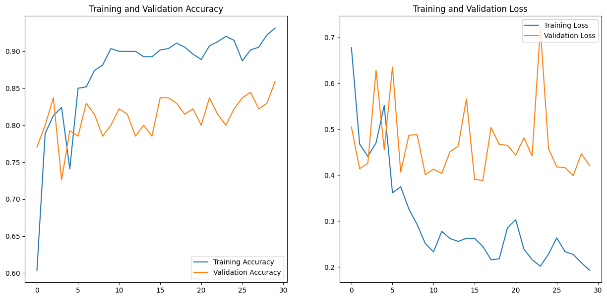
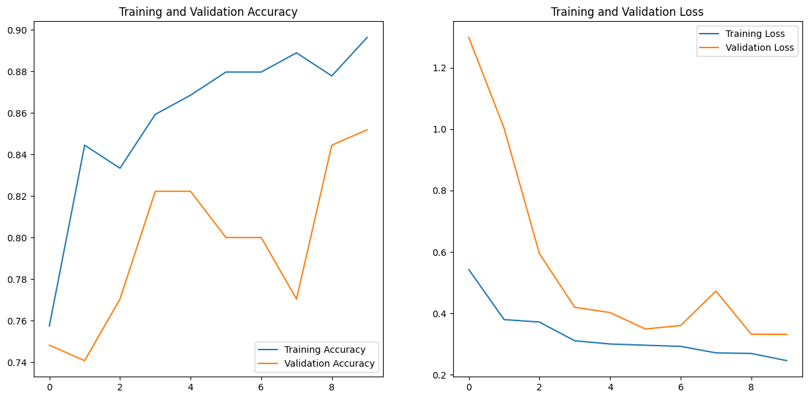
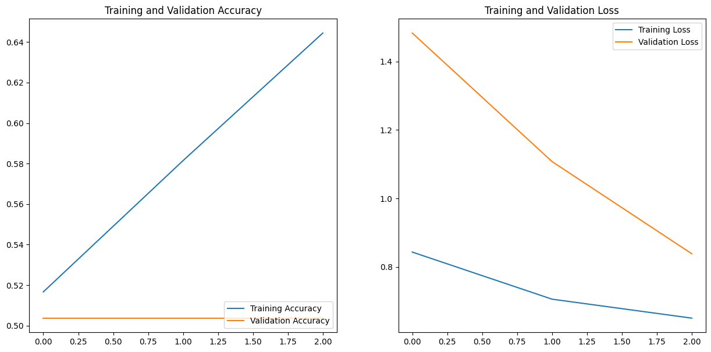

Training and evaluation metrics of our deep learning architectures.
Performance results based on training and test datasets.
| # | Model | Training Accuracy | Test Accuracy |
|---|---|---|---|
| 1 | CNN | 85.93% | 69.23% |
| 2 | MobileNet | 85.19% | 84.62% |
| 3 | InceptionResNet | 50.37% | 53.85% |
Accuracy and loss curves generated during model training.
Training: 85.93% | Test: 69.23%

Training: 85.19% | Test: 84.62%

Training: 50.37% | Test: 53.85%

Among the evaluated models, MobileNet achieved the best balance between accuracy and computational efficiency, making it the preferred architecture for real-time pothole detection in production environments.